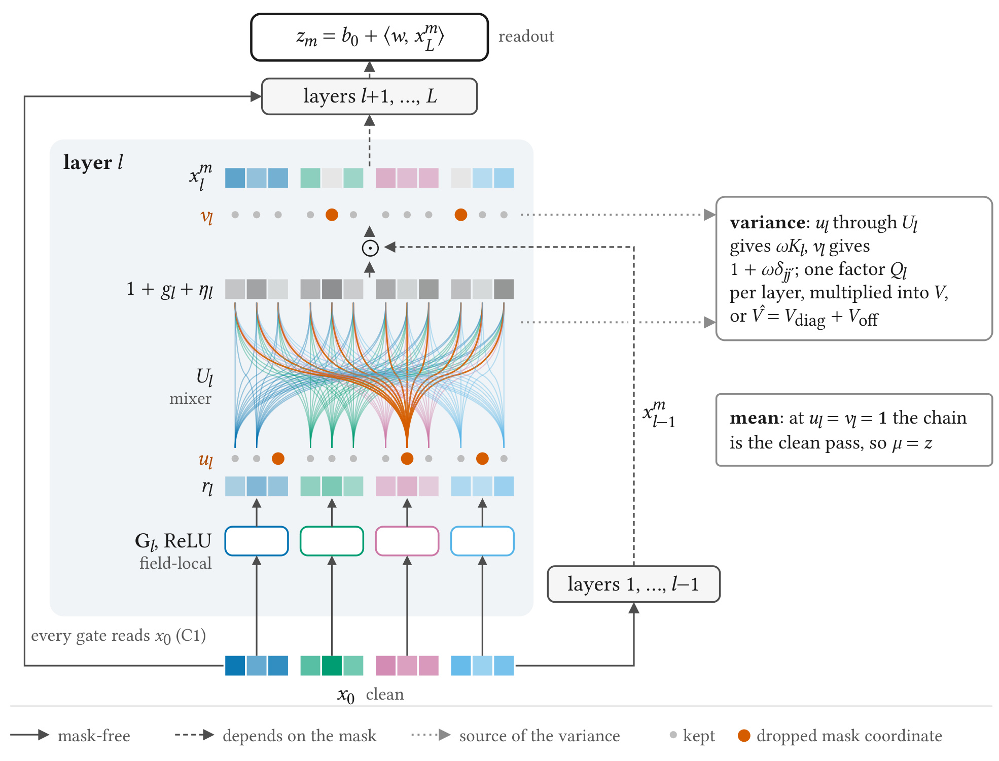
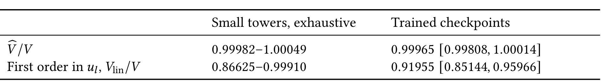
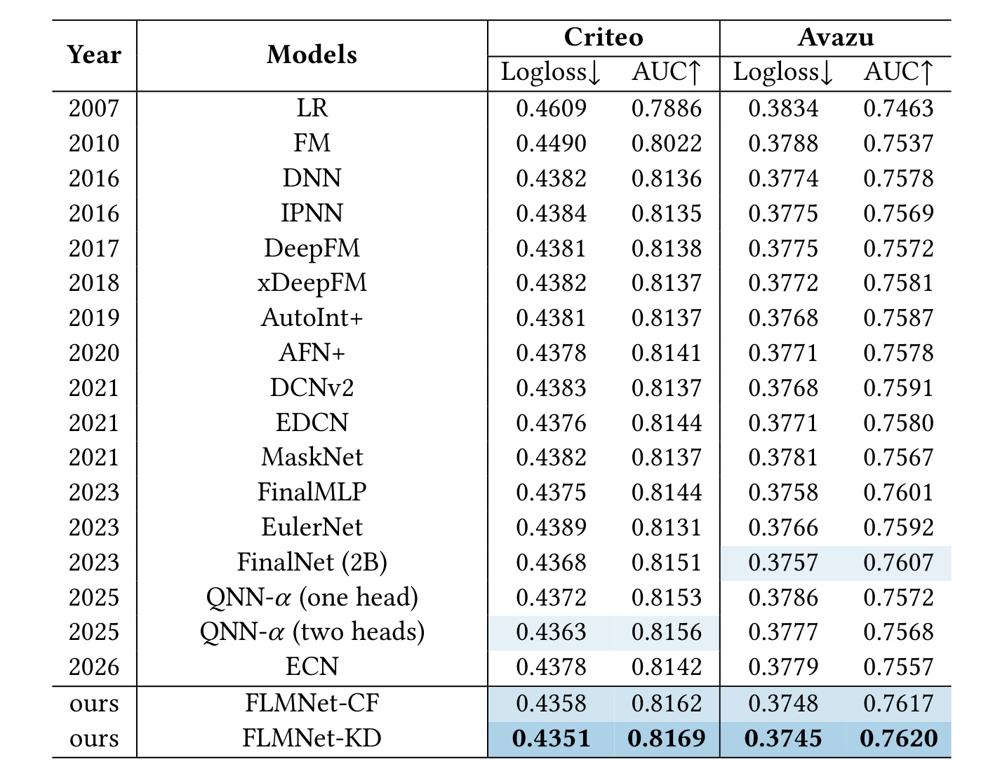
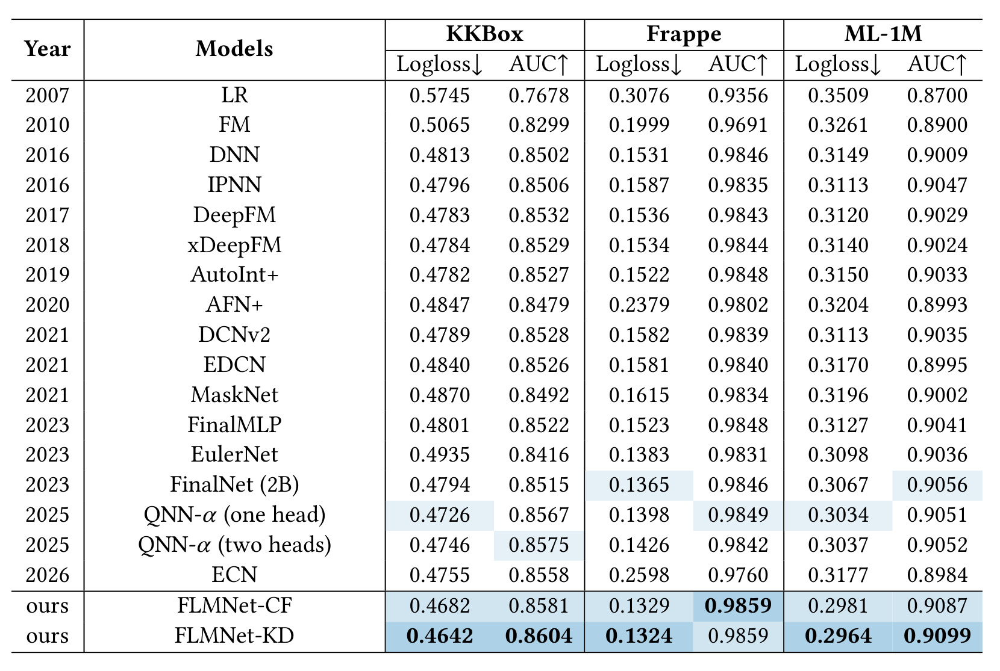
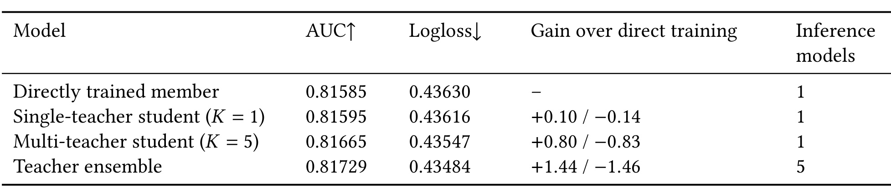
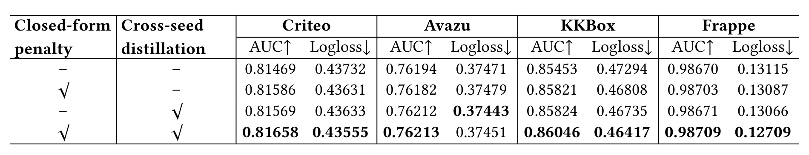
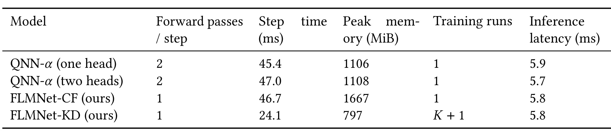

FLMNet：把掩码与随机种子的集成收益带回单塔 CTR 模型
论文：FLMNet: Self-Ensemble Distillation from Masks to Seeds for Single-Tower CTR Prediction。作者 Yifan Wang、Yifei Du，同等贡献；第一作者主要机构为新加坡国立大学，合作机构为中国科学技术大学。首版公开时间为 2026 年 10 月 19 日 10:27 UTC，北京时间当日 18:27。来源：arXiv 论文入口。官方代码 已核验可访问，本次未执行复现。本文依据原论文主文与附录解读，实验数字均为作者报告；首页 ACM TOIS 参考格式的年份和 DOI 仍为占位，不能据此判断已录用。
FLMNet 从 CTR 模型自蒸馏为什么有效这个具体问题出发，把随机掩码下的分歧写成可分析的损失项，再设计满足闭式矩条件的特征交互塔。它也研究独立训练种子的分歧，将多个教师的部分收益压缩进同结构学生。阅读时需要区分理论恒等式、实际训练近似和最终实证收益三个层级。
FinalNet 与 QNN 的自集成损失能提高准确率，但这一目标究竟正则化了什么、教师应怎样聚合，以及是否可以不靠额外随机前向获得相同效果，仍未明确；不同训练种子的集成收益能否进一步留在同一个部署塔中，也需要单独检验。
1. 背景和问题
CTR 预估把用户、物品和上下文中的高基数离散字段映射为点击概率。字段数增加时，可能的取值组合以乘法增长，大多数组合没有足够样本单独估计，因此模型必须在不同组合之间共享参数。FM 通过低维内积实现共享，之后的 DeepFM、xDeepFM、DCNv2 等架构不断增强显式或隐式交互。本文关注的 Hadamard 乘法交互，以一个表示逐坐标乘上输入的学习投影来提高交互阶数。FinalNet 和 QNN 都属于这条设计路线，也都在标签损失之外增加由模型自身生成的监督信号。因此，仅比较模型最终 AUC，无法判断收益究竟来自更强交互结构、额外训练预算，还是自集成目标本身。
FinalNet 的教师来自两个交互块的平均 logit，两个块分别向聚合预测学习；QNN 则对同一网络运行两次独立 dropout，将概率平均后停止梯度，再监督两次输出。两者的教师都是模型成员的聚合，但成员的来源不同：一者是固定子网络，一者是共享参数下的随机掩码。原论文都通过去除辅助项的消融说明它有用，却没有隔离辅助项到底惩罚了什么。作者因此把问题推进到损失的代数结构，而不是继续添加一种名称不同的蒸馏模块。如果能把自蒸馏写成可解释的分歧约束，就有机会直接控制约束强度，也有机会消除用于估计该约束的随机前向。
这一设定还受到部署条件约束。CTR 系统常需要每天处理海量候选，模型又会跨数据中心复制，线上多跑几座塔意味着持续增加计算和维护成本。集成在离线评估有效，并不意味着线上可以接受。因此本文坚持单次前向、单塔部署，把额外成本放在训练侧。这个约束解释了为什么作者不满足于保留多个 dropout 输出，也不把多个 seed 模型直接一起上线：前者依赖采样，后者依赖多模型调用；最终目标是让确定性网络本身承载两类训练信号。这里的单塔是服务形态约束，并不代表整个研究方案只有一次训练。
作者区分两种噪声。掩码噪声是固定参数时，不同 dropout 掩码得到的 logit 偏离平均 logit 的部分；seed 噪声是训练结束后，不同初始化和样本顺序所得到的模型偏离集成 logit 的部分。前者处在同一个权重解附近，后者来自不同优化轨迹。这两种平均不能互相替代。增加同一模型的采样次数，只能更准确地估计掩码平均，不会自动得到不同训练轨迹之间共享的预测信号。相应地，取消随机采样也并不意味着所有模型不确定性已经消除，后续跨 seed 蒸馏仍可能有收益。
需要进一步区分掩码噪声与采样误差。对有限个掩码取平均，其 logit 估计的方差随采样数增加而下降；但单个掩码成员相对真实平均值的分歧不会随平均次数消失。无限掩码极限消除的是估计偏差和梯度采样误差，留下的是需要正则化的分歧。若把采样越来越多解释为模型差异越来越小，就会误读论文的主要贡献。作者并没有证明无限采样会改变训练轨迹到某个唯一最优点，而是先研究在固定参数下，目标函数收敛成什么形式，再检验由此构造的确定性目标是否有效。
三项研究问题由此连在一起：首先，有限掩码的标签加蒸馏目标，在掩码数趋于无穷时约束什么；其次，什么塔结构允许从一次确定性前向得到所需均值和方差；最后，不同 seed 的集成收益是否能继续蒸馏进同结构学生。第一项需要明确教师聚合空间，第二项需要约束门控依赖，第三项需要计算完整训练预算。任何一项缺失，都会把一条有前提的分析写成任意 CTR 模型直接加一个闭式正则即可。论文实际上通过 QNN 的反例说明，门控读取随机中间表示时，闭式计算会错估被正则化的对象。
还有一个重要评价边界：交叉熵中的 Jensen gap 恒等式解释的是平均成员与平均 logit 预测之间的 Logloss 差，而不是 AUC 的严格增益。AUC 衡量排序，Logloss 同时反映概率预测质量，两者可以不同方向变化。模型通过降低分歧改善训练目标，也不保证测试集泛化一定更好。因此作者除了报告主结果，还要做关闭惩罚、匹配正则剂量、切换惩罚时机、跨 seed 蒸馏和成本比较。本文真正值得借鉴的是把机制假设转化为这些可区分的实验，而非只把五个基准的第一名作为答案。
从已有模型的定位看，论文没有声称第一次提出 dropout 一致性、知识蒸馏或多模型教师。它把这些成熟思想组合到一个可分解的二元预测目标中，随后反向约束网络设计。这样阅读可以避免夸大创新，也能发现其可迁移性所在：不是所有业务都适合复制局部门控，但已有辅助损失是否只是提高了原本就有的分歧惩罚，常常可以先用代数和受控消融回答。对于样本极其稀疏、标签噪声又较大的推荐任务，区分模型记住的偶然模式和不同视图共同支持的模式，是解释这一正则的合理直觉；直觉仍需要实际样本上的对照支撑。
从训练信号看，软教师不是新的真实标签，而是同一数据在不同掩码或不同优化轨迹下得到的预测共识。共识可能滤除单个成员记住的细节，也可能保留所有成员共享的错误，因此需要与原标签训练的阶段关系一起理解。本文的学生从已收敛成员开始，只回归聚合预测，这与从头联合优化标签和教师的常见蒸馏不同。起点若没有充分收敛，或教师只在同一偏置数据上产生一致错误，是否仍有收益，论文没有作一般保证。作者把训练标签继续下降但验证损失升高的现象作为过拟合证据，为何学生此时应接受教师提供了经验解释，却没有将教师共识等同于因果真值。这个限定对广告点击任务尤其重要，因为曝光机制和负采样可能让全部教师共同继承偏差。
2. 方法
2.1 自集成的无限掩码极限与高斯替代
论文先将二元交叉熵写成 softplus 减去线性标签项。令同一输入在掩码下的 logit 为随机变量，其均值是掩码集成的聚合量。由于标签项线性，成员平均损失与平均 logit 损失之间的差，完全来自 softplus 的凸性。这也是后续可把掩码分歧和 seed 分歧放进同一代数框架的原因。需要注意，平均概率与对平均 logit 求 sigmoid 并不相同；本文的精确推导选择后者，因为它最小化教师到成员这一方向的 KL 总和。原始 QNN 的概率平均教师不能直接视为此推导的完全等价实例。
符号解释：$t$ 是二元标签或软目标，$z$ 是 logit，$\sigma$ 为 sigmoid，$\zeta$ 为 softplus。对应原文式（1），该恒等式适用于硬标签和停止梯度后的教师概率。
符号解释：$S$ 为独立掩码数，$m_i$ 为第 $i$ 个掩码，$E_S$ 为教师，$y$ 为标签，$\lambda$ 为蒸馏强度，$\operatorname{sg}$ 表示停止梯度。式（3）与（4）把采样次数和蒸馏权重解耦。
符号解释：$A$ 是非负 Jensen gap，$\mu$ 是平均 logit，$\kappa$ 是有效惩罚系数，$\doteq$ 表示相差零梯度项。标签拟合聚合预测时 $\kappa=\lambda$，标签逐成员拟合时 $\kappa=1+\lambda$，对应式（6）至（8）。
普通 dropout 已经对应一份分歧惩罚。逐成员拟合标签、不增加蒸馏时，系数为一；自蒸馏增加的是超过一的部分，而不是一种与 dropout 完全无关的目标。有限采样时仍有偏差：有效系数还依赖聚合 gap 与成员 gap 的比率，小方差近似下该比率约为采样数的倒数。因此两次前向和无限极限不能在固定权重下简单互换，更不能只用运行次数解释收益。停止梯度也必须保留，否则教师熵项的梯度处理改变，前述等价关系就不是同一个训练目标。
符号解释：$V$ 是掩码 logit 方差，$m_\star$ 是其支持凸包内 sigmoid 导数的下确界；$\lambda_i,\xi_i$ 为标准正态下的求积权重和节点。前半是式（10）的严格界，后半是式（12）的高斯加三点 Gauss–Hermite 近似，训练采用标签损失加 $\kappa\widetilde A$。
上界不要求扰动很小，下界在 logit 进入饱和区域时会变弱。实际计算则用同方差高斯代替真实掩码分布，再进行数值求积；训练方差本身还会截断，因此无限极限具有精确分解不等于最终惩罚精确。作者放弃单纯二阶展开，是因为大方差样本上低阶 Taylor 可能明显低估 gap。其图二报告高斯替代在所测各行上与 Monte Carlo gap 的偏差保持在百分之二十八内，但这仍是有限模型和样本范围的实证。理论界约束真实 gap，不能不加说明地赋给任意数值替代。
2.2 跨随机种子的同形分歧与学生回归
在论文第三节的后半，平均对象从掩码换成独立训练的模型。相同交叉熵结构让前面的分解逐样本成立：平均成员的 Logloss 减去平均 logit 教师的 Logloss，恰是 seed gap。标签线性项抵消，所以这一关系不依赖该行标签是什么。它解释集成为什么降低平均成员损失，但不保证一个有限容量学生能完整学到教师，也不保证同一个集成在任意线上分布都获益。对两种分歧做逐层展开，可以得到总 gap 等于 seed 内平均 mask gap 加 seed gap 的望远镜分解；这是一条关于固定预测器的恒等式。
符号解释：$K$ 为教师塔数，$\mu_s$ 为第 $s$ 个教师 logit，$\bar\mu_K$ 为预先计算的聚合 logit，$\mu$ 为学生输出。前两项对应式（13）至（15），最后是式（16）的训练目标。
学生从已收敛的 FLMNet-CF 参数初始化，只对教师平均 logit 做平方回归，这个阶段不再使用标签损失或闭式惩罚。教师输出可以在训练样本上一次算出并保存，因此学生每步无需在线运行全部教师。其输入输出接口和服务模型保持相同，但训练总量是教师的多次独立训练，加上一次学生训练。seed 分布由优化器、初始化、数据顺序和提前停止共同决定，作者没有为它声称与掩码一样的闭式期望。两个 gap 的代数可加，也不推出最终 AUC 收益必然可加；这必须由四组组件实验来验证。
2.3 满足闭式矩条件的局部门控与方差截断
FLMNet 的每个字段先得到 embedding，按字段组织的局部门控只读取未被掩码扰动的输入。稀疏块对角映射使每个 ReLU 单元只看一个字段，随后通过全局 mixer 将该字段的门控影响扩散到其他字段坐标。运行中的 carrier 每层只做逐坐标残差乘法，最后用仿射读出得到 logit。输入还可进行字段混合校准，校准增益从零初始化，且只依赖干净 embedding，因此不会破坏掩码独立性。局部门控是恢复表达能力的设计，真正决定均值等式的是门控不读取随机 carrier。
符号解释：$x_0$ 是字段校准后的输入，$G_l$ 是按字段分组的块对角映射，$r_l$ 为局部门控单元，$U_l$ 为混合器，$g_l$ 为全宽门控，$x_l$ 为运行表示，$w,b_0$ 为读出参数。对应式（17），训练中的随机门控可写成下式。
符号解释：$u_l$ 和 $v_l$ 分别是门控单元和层输出的独立倒置 dropout 因子，$a_j=w_jx_{0,j}$，$\pi_{l,j}$ 是该层对坐标的随机乘法因子。式（18）至（19）及命题四点一要求掩码均值为一、门控输入干净、读出仿射和逐坐标载体更新。

图中左下的干净输入沿实线送到每一层局部门控，而右侧进入的运行表示沿虚线携带前层掩码影响。两条路径没有混淆，才允许把每层随机因子分离。门控单元上的橙点代表一次随机屏蔽，经过混合器后会同时影响多个 carrier 坐标；这意味着不同坐标之间的协方差是真实存在的，不能随意采用完全独立的均值场假设。层输出上的另一组橙点则直接屏蔽各坐标，其二阶矩贡献不同。图右上标出方差由每层的二阶因子累乘，右下标出所有掩码设为均值即可恢复干净前向。这两个结论依靠的是依赖图和代数结构，不是认为神经网络一般都能把期望穿过非线性。若把门控输入改回带掩码的前层 carrier，同一随机变量可能同时出现在 carrier 和 gate 中，甚至以平方进入输出；倒置 dropout 的二阶矩不等于一，于是均值等于干净输出的证明失效。字段局部化本身不提供这个保证，仿射读出或载体逐坐标更新缺失也可能破坏结论。作者把三条条件称为充分条件，没有证明它们对所有结构都是必要条件；纯线性混合网络就是不满足逐坐标形式而仍可保持均值等式的例子。理解这幅图的价值，是能够在修改网络后追踪哪条依赖边改变了被惩罚的随机分布。
符号解释：$Q_{l,jj'}$ 为一层两坐标随机乘法因子的二阶矩，$V$ 是式（20）至（21）的精确方差；$V_{\mathrm{diag}}$ 保留同坐标全部阶数，$V_{\mathrm{off}}$ 保留异坐标一阶项，二者给出式（23）至（24）的可训练截断。
精确方差每层需要宽度平方的矩阵，因此只作为误差标尺。截断版通过两个额外矩阵乘法避免显式枚举坐标对，保留同坐标高阶项及 gate fan-out 的主要协方差。数值实现也不是细枝末节：同坐标项用非负递推累加，避免近似大数相减；去掉某层后的乘积用前缀后缀计算，避免门控因子为零时除法失效；异坐标项允许为负，不单独硬截成非负。训练用一次干净塔前向与矩计算共同反向传播，推理则完全关闭方差和惩罚，只输出干净 logit 的 sigmoid。这种成本迁移需要实际测量，不能由一次前向自动推出显存或速度优势。
3. 实验结果
3.1 数据准备、对手和比较边界
作者在 Criteo、Avazu、KKBox、Frappe、ML-1M 五个公开基准与十七个模型比较，覆盖广告和推荐任务。数据规模从 Frappe 的二十八万余条到 Criteo 的约四千六百万条，字段数分别为十和三十九；Avazu 约四千万条、二十二字段，KKBox 约七百四十万条、十三字段，ML-1M 经处理后约七十三万九千条、七字段。Criteo、Avazu、KKBox、Frappe 使用 BARS 和 FuxiCTR 的准备规则；ML-1M 删除评分三，将高于三的评分转为正例，再随机按八比一比一划分。词表只拟合训练集，未见类别映射保留入口。这些是作者报告结果的具体任务，不等同真实信息流全量召回或在线排序实验。
Avazu 有一个必须公开的改变：原验证与测试集的正例率分别约百分之十六点八和十五点二，作者保留训练集，将验证和测试合并后重新随机划分。所有参评模型在这一统一版本上训练和比较，所以论文内部相对比较有意义，但数值不能直接对齐原始 BARS 测试榜。主实验对 embedding 维度也作统一限制，例如 Criteo 和 Avazu 都采用十维，部分原论文使用更大 embedding 的模型重新训练。附录保留原始 Avazu 划分和公开结果复现差异，提醒读者不要把这里的均值当成原榜单单次最佳值。
比较的另一边界是训练配方。FLMNet 在较大数据集用余弦学习率、部分数据集提前停止，直接训练塔使用 EMA 权重，学生使用原始权重；基线从公开最优记录配置出发，作者没有统一给全部基线加余弦调度和权重平均。这样做有避免一刀切训练配方不适配的理由，却也意味着主表的优势是结构、目标和训练配方共同形成的系统结果。真正隔离闭式惩罚和 seed 蒸馏的证据来自同骨干消融，不能只从主表推断所有收益都来自理论提出的一个损失项。
3.2 方差近似能否代表真实掩码分歧

表一先在小塔上穷举全部掩码，再在六个训练检查点上用双精度计算精确方差。后者每个检查点选四千零九十六行，共二万四千五百七十六行。完整截断的方差比中位数为零点九九九六五，第一和第九十九百分位约零点九九八零八与一点零零零一四；只对门控掩码保留一阶的粗截断，中位数约零点九一九五五。这个对照说明保留对角高阶项并非纯粹形式复杂度，它修正了约百分之八的系统低估。保留方案仍可能略高估或低估，不能称为精确方差。作者进一步检查所测行没有出现负的总截断方差，但异坐标协方差可以为负；不能因为局部项为负就把它裁掉。表的验证目标是矩近似，而高斯求积误差、训练目标偏差和最终 AUC 属于另外的检验层级。论文没有测试把两种方差方案实际训练到底会带来多大准确率差别，因此数值精度改善并非直接的性能消融结论。
门控输入的对照尤其值得关注。原 QNN 的 gate 读取带掩码 carrier，不满足独立条件，闭式代理会错估其均值和方差；即使训练成功压低代理，也可能没有同等压低真正的 Monte Carlo gap。把 QNN gate 改为只读输入可修复条件，却在 Criteo 无惩罚对照中损失十点五乘十的负四次方 AUC。FLMNet 通过字段局部门控与 mixer 将差距恢复到零点九乘十的负四次方。这里证明的是理论可计算性和交互表达力需要共同设计，不能为了套公式任意截断网络依赖后期待原有表达能力不变。
3.3 五基准主结果

表三中，Criteo 的最强基线 QNN 双头 AUC 为零点八一五六、Logloss 为零点四三六三；FLMNet-CF 对应零点八一六二和零点四三五八，KD 对应零点八一六九和零点四三五一。相对于该基线，KD 的 AUC 绝对提高零点零零一三，不能表述成提高百分之一点三。Avazu 的最强基线 FinalNet 为零点七六零七和零点三七五七，CF 为零点七六一七和零点三七四八，KD 为零点七六二零和零点三七四五。两项指标一起改善，说明排序收益没有以主表 Logloss 恶化为代价。多数重点模型采用六个 seed，其他基线三 seed，Avazu 的 KD 只有三个 seed，因此不同条目的均值精度并不完全相同。Criteo 上作者重跑的 FinalNet 和 FinalMLP 低于 BARS 已公开值，且后者是单次调参记录；这限制了把表内排名直接推广为所有训练配置下绝对领先的说法。
主表的直接训练成员采用指数滑动平均权重，蒸馏学生采用原始权重，因此表内比较包含训练配方差异。作者对全部模型使用同一处理后的划分和相同嵌入维度，但没有把自己的余弦学习率和权重平均统一施加到全部基线；要隔离损失的贡献，应转向同骨干组件消融，而不能把主表差值全部解释为闭式惩罚收益。

推荐基准中，KKBox 的 CF 与 KD AUC 分别零点八五八一、零点八六零四，Logloss 分别零点四六八二、零点四六四二；对比 QNN 双头的零点八五七五和零点四七四六，KD 收益更明显。ML-1M 上 CF 为零点九零八七、零点二九八一，KD 为零点九零九九、零点二九六四，对应的最强主表基线 FinalNet 为零点九零五六、零点三零六七。Frappe 则呈现重要例外：四舍五入后两者 AUC 都是零点九八五九，但未舍入均值是 CF 零点九八五九四、KD 零点九八五九零，所以不能声称 KD 在所有 AUC 列都第一；KD 的 Logloss 仍由零点一三二九降至零点一三二四。表格同时展示某些基线 AUC 与 Logloss 不同步，说明只报一种指标会遗漏排序与概率拟合间的差别。跨数据集不能直接平均绝对 AUC 差，因为数据难度和基准 AUC 不同；作者用相对 DNN 超过随机排序部分的归一化增益进行补充比较，这个指标也不等于线上点击提升。
按论文的归一化口径，CF 五基准平均相对增益为百分之一点三六，KD 为百分之一点六二，对比 QNN 双头约百分之零点六六。百分比的分母是 DNN 的 AUC 减去零点五，而不是 DNN 的完整 AUC，阅读二手摘要时很容易混淆。作者在测试评估前固定对手和跨 seed 判断规则，CF 在全部基准越过其阈值，KD 在被判断的基准也越过阈值。但三至六 seed、部分 KD 教师集合重叠，不能据此称作充分的统计显著性检验，作者也明确把它称为预先规定规则下的稳定领先。
3.4 正则、蒸馏与过拟合机制
同一塔上，作者比较普通 dropout、两次前向自集成、R-Drop 以及正则剂量匹配的 dropout。对前三者的十二个基准组合，CF 均值全部领先，三十六组 seed 配对中三十四组领先；匹配剂量后，Criteo 与 KKBox 仍有优势。剂量控制很关键，因为在小方差近似下，惩罚强度与 dropout 率主要通过二者组合起作用，只删除蒸馏项而不调整 dropout，就不能隔离目标形式。Frappe 等差异较小的场景不能强行解释为独立机制显著获胜。图八的开关实验在 Criteo、恒定学习率下进行：开启惩罚能减慢验证与训练交叉熵差的增长，支持抑制过拟合的解释，但起始时机每四个 epoch 探测一次，不足以精确定位最佳开启点。

五教师蒸馏的验证对照给出更直接证据。平均直接成员的 AUC 为零点八一五八五、Logloss 零点四三六三零，五塔教师集成为零点八一七二九、零点四三四八四；多教师学生达到零点八一六六五、零点四三五四七，保留超过一半的集成增益。只向单个其他 seed 蒸馏，平均 AUC 约零点八一五九五，提升接近 seed 噪声阈值，说明收益不是任意额外训练都能带来。相同起点继续用标签训练会加剧过拟合。局部参数路径分析发现蒸馏方向与标签续训方向近乎正交，但全部来自一个起始 seed 和一个基准，不能推广成普遍的优化几何定理。
表七的参考成员均值来自六个直接训练的塔，而五教师集合排除了作为学生起点的成员；教师相对自身五成员的平均损失差才严格对应seed gap。学生起点的AUC比六成员均值略低，因此相对自身起点的提升还会略大于表中展示的数值。最后一列把所有学生和直接成员的部署塔数记为一，只有教师集成为五，清楚区分教师上限与可上线学生。表内增益采用千分单位，不能直接把正负零点几读作绝对AUC。这个实验显示回归共识比模仿任意一个其他解有效，但单个起点仍限制结论范围。

表八以同骨干的四种组合检验两类收益的关系。在 Criteo，基础 AUC 零点八一四六九，单独惩罚零点八一五八六，单独蒸馏零点八一五六九，组合零点八一六五八；单项增益之和为零点零零二一七，组合实际增益零点零零一八九，保留约百分之八十七。KKBox 基础零点八五四五三，单项零点八五八二一和零点八五八二四，组合零点八六零四六，约保留百分之八十的增益和。这支持较大程度互补，远非完全相加。Avazu 惩罚单独还略降 AUC，四行差异小于 seed 阈值；Frappe 的 AUC 差异也不够支持同等强度的解释。该表是验证集、三个 seed 的因子对照，与主测试表数值并不冲突。Criteo 组合行还复用了较早、教师 seed 抽样方式略不同的实验，严格复现应先统一教师集合再评价交互项。
表中学生使用原始权重，其余直接训练行使用指数滑动平均权重；惩罚列描述的是教师成员此前是否接受闭式正则，学生回归阶段本身没有继续施加该项。组合结果因而比较的是完整两阶段流程，而不是在相同优化步骤上把两个损失直接相加。对互补性的复核还应固定教师集合与学生起点，避免把教师抽样差异误读为组件交互。
3.5 训练预算与服务成本

表九使用一张三十二 GB V100、单精度、批大小四千零九十六，批数据预加载到设备；时间是预热后测量的中位数。这一设置下 CF 每步四十六点七毫秒，与 QNN 单头四十五点四、双头四十七点零接近。虽然网络主体只前向一次，矩计算和反向开销大致抵消省去的一次主体前向，峰值显存反而是一千六百六十七 MiB，对比一千一百零六或一千一百零八 MiB，约高百分之五十。KD 学生阶段每步二十四点一毫秒、七百九十七 MiB，已排除预先算好的教师输出，但总训练次数是教师数加一。所有模型在该批量的推理延迟约五点七至五点九毫秒。因此论文支持在相似服务成本下提升精度，不支持闭式方案普遍加速训练或降低显存。实际端到端还应计入教师 logits 生成、存储读取、embedding 查找与真实在线 batch 分布，表内微基准没有覆盖这些系统成本。
显存数字是扣除预加载批数据后的峰值已分配显存，并不是整卡全部占用；计时包含各模型自己的训练步骤，其中直接训练塔还包括权重平均更新。学生阶段排除预先计算教师的成本，因此不能用二十四点一毫秒单独代表整个蒸馏流程。
4. 总结
FLMNet 的主要贡献是把 CTR 自集成收益拆成可检验的两层。固定参数下，logit 聚合使交叉熵分解成聚合预测损失与成员分歧；满足特定依赖条件的塔可以不采样地获得精确均值和高精度方差近似；训练结束后，跨 seed 集成还提供同一损失结构下的另一份分歧收益，再通过学生回归转移。精确的是代数恒等式及条件下的矩公式，近似的是高斯分布替代、求积和可训练方差截断，是否带来泛化收益则由实验回答。将这三种结论逐层区分，比单独记住一个模型缩写更有价值。
从推荐训练实践看，最值得迁移的是对已有双前向目标先做目标分析：确认教师在概率空间还是 logit 空间，确认标签拟合聚合还是逐成员，确认停止梯度的位置，再设计等强度对照。若只在复杂 CTR 塔上套一个方差惩罚，却不检查 gate 依赖，可能正则化的是错误代理。若已经有多 seed 训练用于稳定性评估，可以研究是否把其平均预测蒸馏回服务模型，但需要先保存独立教师的训练数据口径和预测版本，再估计新增训练量能否换来可重复的收益。论文没有在线 A/B，不能把离线 AUC 小增益直接换算成点击或收入提升。
局限至少有四项。第一，主表使用公共离线任务，时间漂移、超高维真实特征、延迟标签和在线反馈没有验证；ML-1M 的显式评分二值化更不等同自然曝光点击。第二，均值和方差分析依赖门控、载体、读出与掩码独立性，随意增加归一化、递归门控或非线性读出可能失去保证。第三，实际训练代理没有统一的逐样本泛化误差保证，高方差尾部、logit 饱和和数值精度变化都应重新检查。第四，基线与 FLMNet 的调度、EMA 使用不完全对称，当前系统结果不能把所有优势单独归给一个损失。第五，KD 的多 seed 教师增加完整训练预算，学生样本和教师集合重叠也使方差估计更复杂。第六，关于抑制过拟合和局部参数方向的深入实验集中在 Criteo，其他基准的机制外推仍有限。
后续可以优先做三组验证。其一，在自己的骨干上画出干净输入、随机 carrier 和 gate 的依赖，再用极小网络穷举掩码核对均值与方差，避免训练很久才发现代理不匹配。其二，用完全相同的数据、调度、EMA、教师集合与总训练预算，对比普通 dropout、剂量匹配 dropout、有限采样自蒸馏和闭式目标，同时记录概率校准与尾部样本。其三，把单教师、多教师、只续训标签和多教师蒸馏放在一致起点上比较，分别统计可转移增益、教师预计算开销及服务时延。若这些结果稳定，再研究时间划分、跨天漂移和线上小流量验证，会比把公共随机划分的第一名直接作为上线依据更可靠。
评估可复用性时还应保留基准版本与权重版本的完整对应：直接成员常用指数滑动平均权重，学生用原始权重，两者不能通过任意选择最好检查点公平替换。教师预测一旦缓存，样本顺序、类别词表和特征处理必须与学生严格对齐，否则看似合理的低回归误差也可能来自错配样本或泄露。本文给出的离线基准和代码入口使这些检查具备复现起点，但本次精读只核对原文，并未执行训练或独立重算全部日志。后续若把方案纳入自己的实验，优先验证这些前提，再讨论模型收益的业务价值。